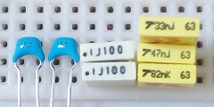
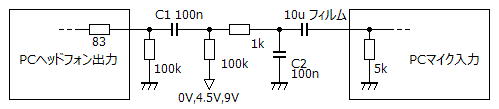
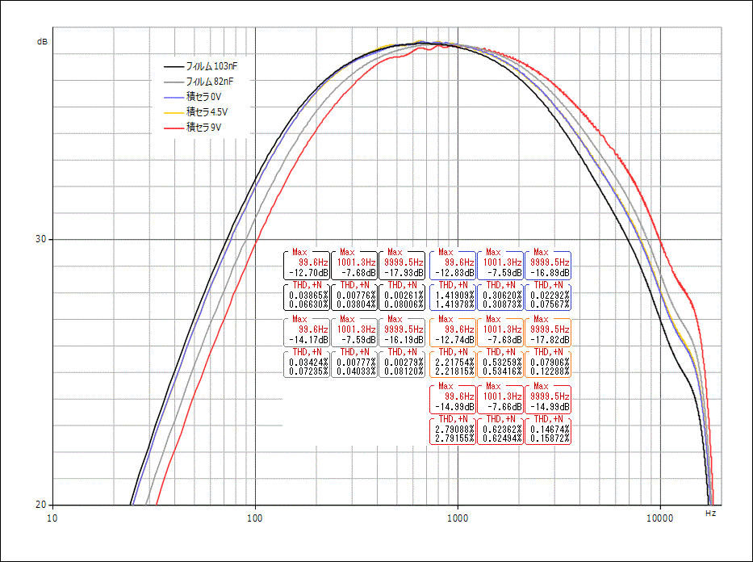

積層セラミックコンデンサの特性メモ
2017年07月25日 カテゴリー：○○で音は変わるのか
積層セラミックコンデンサ(MLCC)の特性については村田製作所ウェブサイトのコンデンサPLAZAに記載されています。それによると、高誘電率系MLCCは温度・時間経過・DCバイアス・AC電圧といった各条件により容量が変化してしまうということです。電源部分によく使われるMLCCですが、今回はハイパスフィルタ(HPF)・ローパスフィルタ(LPF)で使用し、さらにDCバイアス電圧をかけて特性を測定してみます。

今回使用したMLCCは高誘電率系の耐圧50V、F特性（JIS規格）のものです。たぶんEIA規格ではY5V特性に近いだろうと思います。実測値約94nFのもの2個を使いましたが、測定値はすぐ変動するためあまりあてになりません。比較用にフィルムコンデンサも準備しました。実測値はそれぞれ103nF、103nF、82nF（34nF+48nF並列）、82nFです。
▽回路図

C1とC2を変更します。電圧は0V(GND)、4.5V、9Vの3パターンですが、フィルムコンデンサは電圧による容量変化がほとんどないので、0Vのみの測定です。電圧を変えてすぐは値が安定しないため、数分放置してから測定しました。PCの出力は約1Vrmsです。
▽結果

＜周波数特性＞
0V、4.5Vの場合は103nFのフィルムコンデンサと比較すると高域側(LPF)で差がやや大きくなっています。9Vだと82nFのフィルムコンデンサよりズレていて、かなりの容量低下となるようです。X7R特性であればもっと容量変化は少なくなると思います。
＜歪率＞
バイアス電圧が高い方が歪率が悪化しています。低域は特に悪化していますが、もともとレベルが下がっている部分なので音への影響はそれほどないかもしれません。むしろ倍音が増えていい感じになるかもと思いMLCC10個直列や並列での測定もしてみましたが、歪率はほとんど変わりませんでした。
エフェクターに使うコンデンサとしてはやはりフィルムコンデンサが無難で、無理にMLCCを使う必要はないでしょう。一応省スペースで若干安いという利点はあるので、自分用のエフェクターには適宜使っていくと思います。